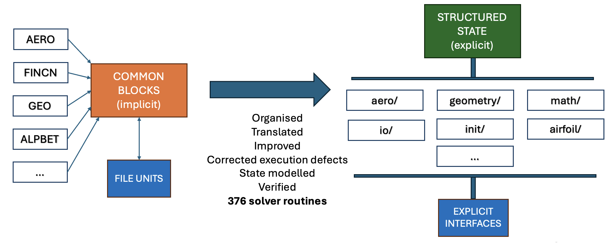
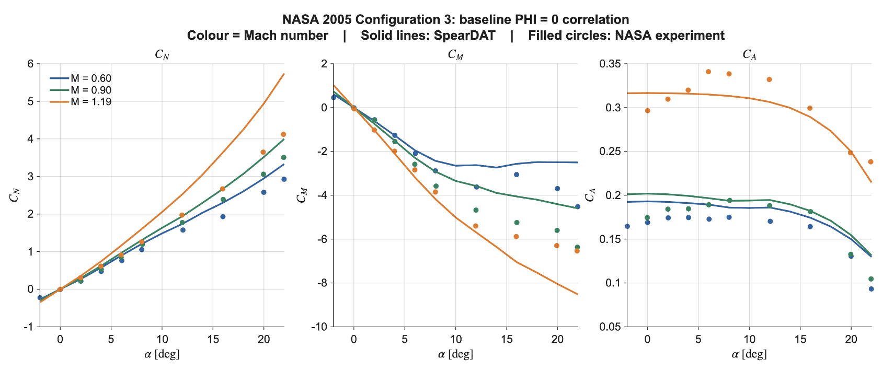

SpearDAT
Independent Engineering Project
A modern C++17 and MATLAB framework for preliminary missile aerodynamic analysis, reconstructing and modernising the publicly released Missile DATCOM implementation.
SpearDAT brings established Missile DATCOM aerodynamic methods into a structured software architecture while correcting identified implementation defects and selected methodological issues.
It replaces the legacy card-and-file workflow with structured C++ and MATLAB interfaces, validated case preparation, isolated solver execution and traceable aerodynamic results suitable for preliminary design and simulation workflows.
Project scope
I developed SpearDAT independently, covering the C++17 solver reconstruction and software architecture, structured C++ and MATLAB interfaces, investigation and correction of legacy implementation behaviour, automated verification and regression testing, NASA experimental validation studies, and technical documentation.

Verification & Validation
Software verification and aerodynamic validation are treated as separate engineering questions.
The current baseline includes 477 automated tests covering routine-level behaviour, solver paths, generated input decks, integration behaviour and corrected defects. Aerodynamic predictions have also been assessed independently against four publicly available NASA wind-tunnel datasets spanning forces, moments, control response, roll behaviour and configuration effects.
Passing software tests establishes implementation behaviour; it does not by itself establish aerodynamic accuracy. Both questions are therefore assessed separately.

Technical Presentation
The presentation summarises the motivation, architecture, engineering workflow, capabilities, verification and aerodynamic validation of SpearDAT.
Documentation
The 376-page SpearDAT MATLAB Interface User Guide provides the detailed reference for installation, configuration, engineering inputs, analysis workflows, result interpretation and validation.
Download the MATLAB Interface User Guide